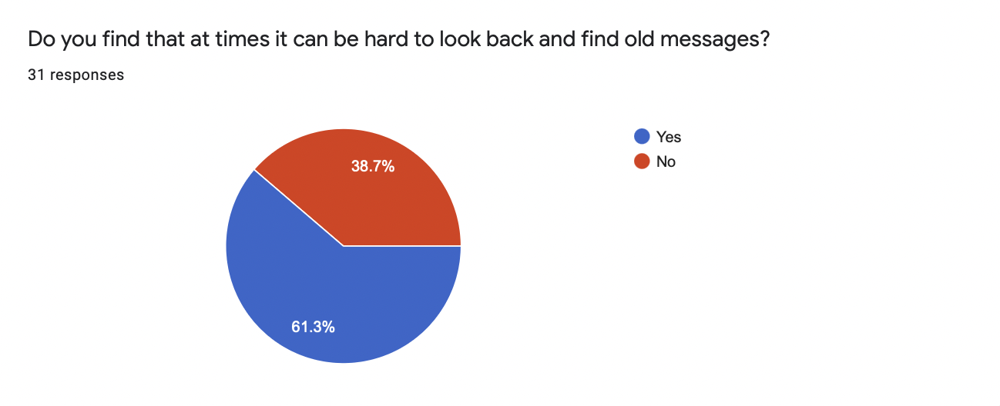
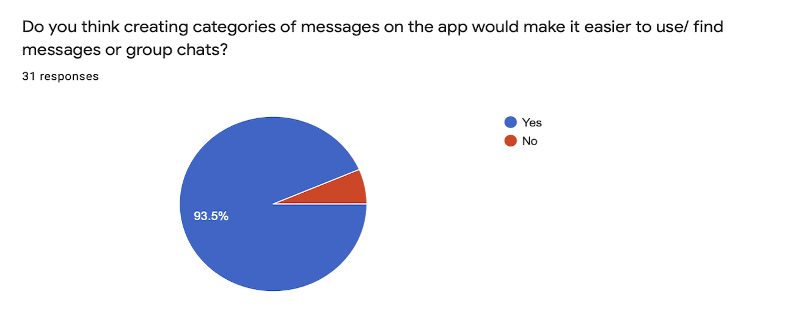
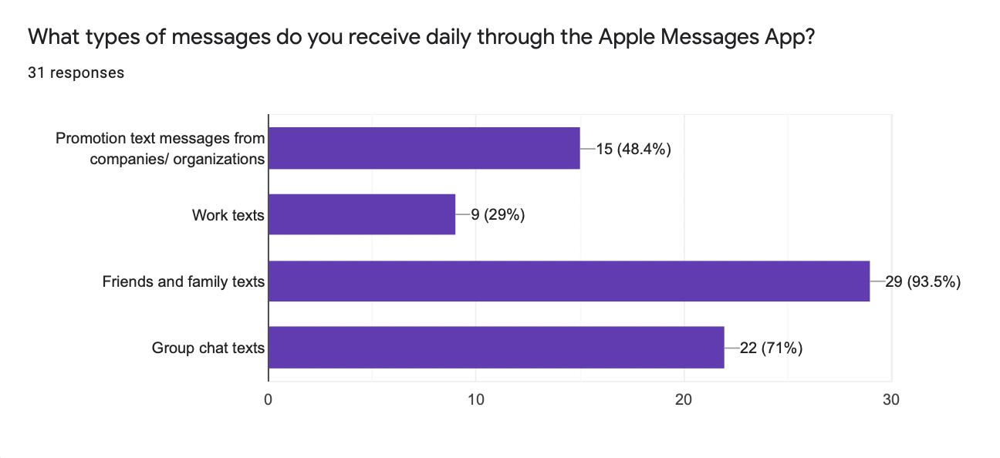
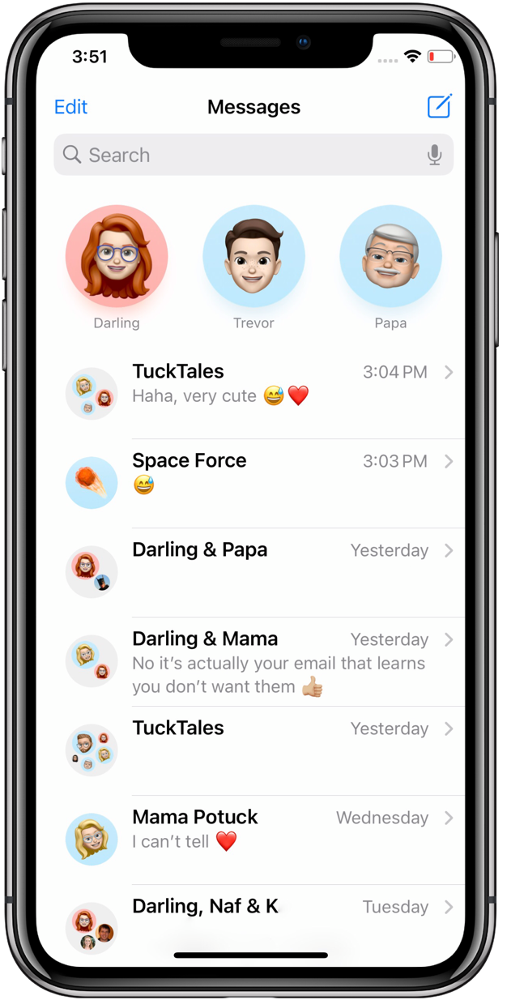
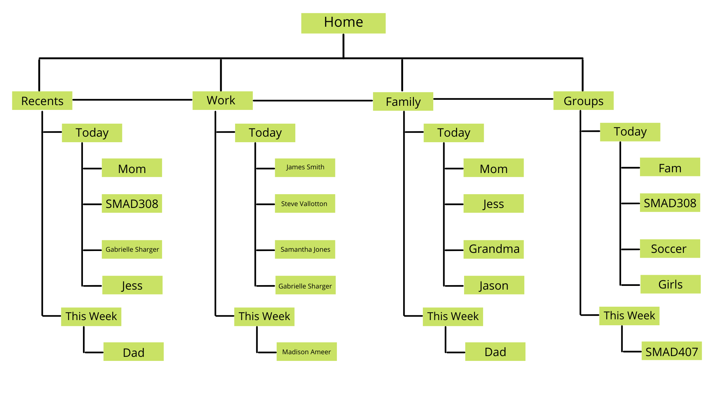
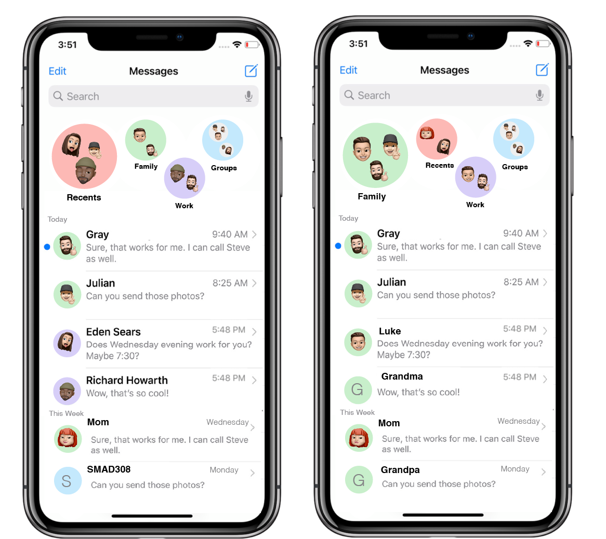

App Flow Redesign Case Study
By Melissa WardThe Messages App is used on Apple iPhones to send and recieve text messages. Most people rely heavily on this app in order to communicate with others through text message. Apple users can create group chats with up to 25 indiviudals, including non-Apple users. More recently companies have been utilizing text messages in order to let customers know about promotions, updates, and more. There are many different kinds of messages that users can recieve and with text messaging becoming a more popular way to communicate, this app is becoming more and more important.
How can we redesign the Apple Messages app in order to make it more efficient and organized?
1. Categorize messages
2. Add section for most recent messages
3. Create more distinguishing features between each category of messages
4. Allow categories to move around
User Research
This study included 31 indiviudals that were Apple users spanning from 20 up to 50+ years of age. 61.3% of users stated that they had difficulty when looking back to locate old messages, while 93.5% stated that creating categories in the Messages app would make it easier to locate messages. A majority of users stated that they used the Messages app for family and friends text messages, but almost half of the users said they also recieved promotional messages via the Messages app.Question 1

Question 2

Question 3

Design Problem Statement
As shown in the image below, it is evident that the main pain point of the app would be the lack of differences between different kinds of messages. Group chats, personal messages, work messages, etc. all look very similar. The only distinguishing feature is the name or the icon and not everyone uses Bitmojis. While you do have the ability to pin specific people and groups there is a limited number before half your screen is taken up by the pinned individuals. Another important issue within the app is the organization of messages by date. While messages do have a time or date on them, finding old texts requires the user to scroll through a sea of text threads.

Redesign
Information Architecture
In order to better understand the changes I made in my redesign, I created a wireframe of the new layout. With each group of contacts that you create, their messages are organized from newest to oldest.

Mockups
One of the main issues that arised in my research was the lack of organization in the Messages app. In order to address this issues I created different groups of contacts that you could pin rather than just a single person or single group chat. I used different colors for each group of contacts so that their contact could be distinguished from other.
I added a category of contacts called "recents" which you allow users to see messages order for newest to oldest. In the redesign I put messges into categories such as "Today", "This Week", "This Month", and so on. This was implemented in the "Recents" group, as well as every other group the user creates within the app.
Another problem I addressed in my redesign was sizing. When you pin a contact at the top of the Messages app, they are all the same size. Creating a larger circle for the group of contacts you have selected allows for easier navigation. I also thought it would be best for user navigation if each of the groups created were automatically pinned at the top of the app. This way if you would like to search for messages from an employee, you can easily click the "work" group instead of mindlessly scrolling through thousands of old text threads.

Conclusion
I thoroughly enjoyed the process of redesigning this user flow for the Messages app on Apple iPhone. I have always had issues with finding old messages or contacts in a fast and efficient way. I think that this redesign could provide for easier use and more creativity among users of the app!